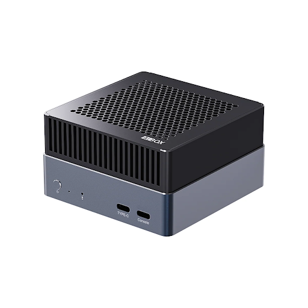

Firefly AIBOX-K3
T-Chip Intelligent Technology · edge mini PC
- SpacemiT K3, 8× X100 RISC-V cores up to 2.4 GHz, RVA23
- Up to 32 GB LPDDR5, UFS, M.2 NVMe
- 2× Gigabit Ethernet, 9–20 V DC input
- −20 to 60 °C operating temperature
Image © T-Chip Intelligent Technology Co., Ltd. · product page